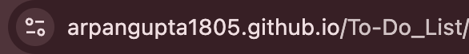
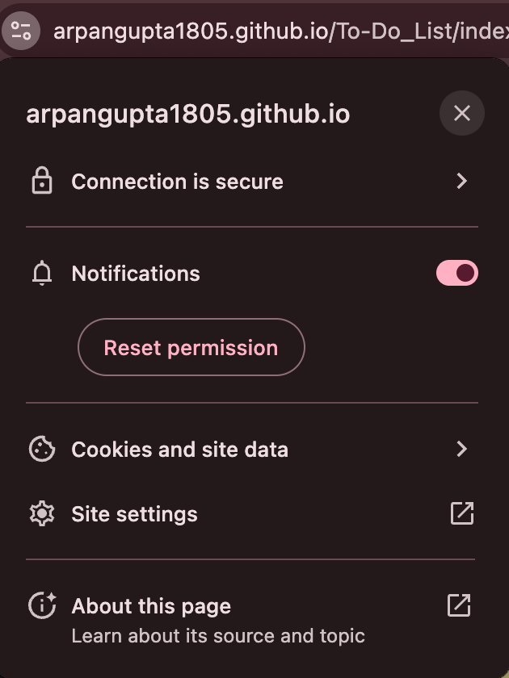

×
How to Enable Notifications
- Click the lock icon (or info icon) in the address bar
- Click on "Notifications" in the dropdown
- Select "Allow" from the options
- Refresh the page
1. 
2. 
- Click the lock icon in the address bar
- Click on "Connection Secure" or site information
- Click "More Information" if needed
- Find "Permissions" and set "Receive Notifications" to "Allow"
- Refresh the page
- Press Command(⌘) + , to open the preferences
- Go to the "Websites" tab
- Select "Notifications" from the left sidebar
- Find this website and select "Allow"
- Refresh the page
- Click the lock icon in the address bar
- Click "Site permissions"
- Find "Notifications" and set to "Allow"
- Refresh the page